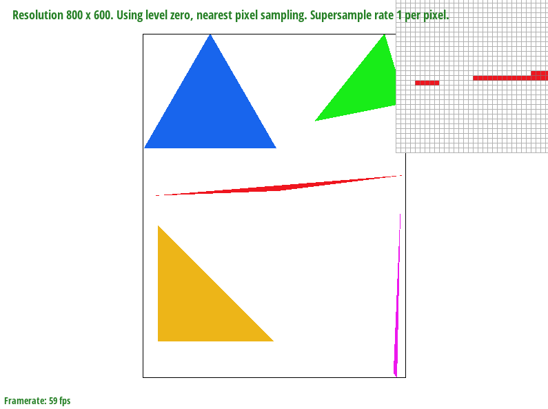
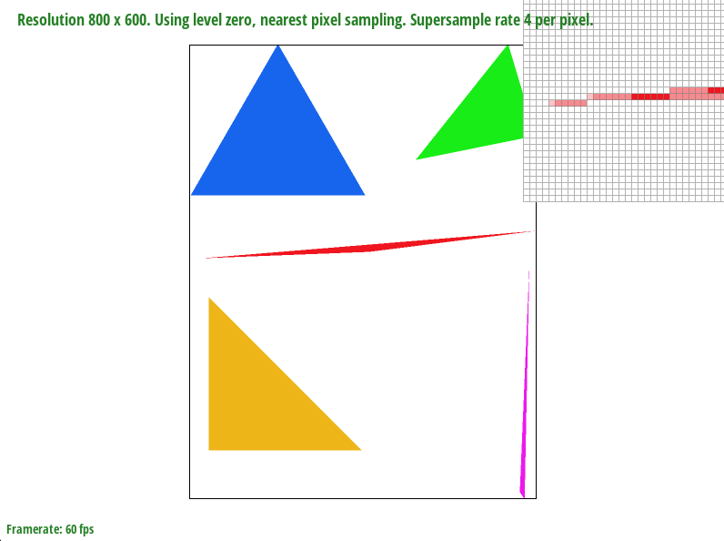
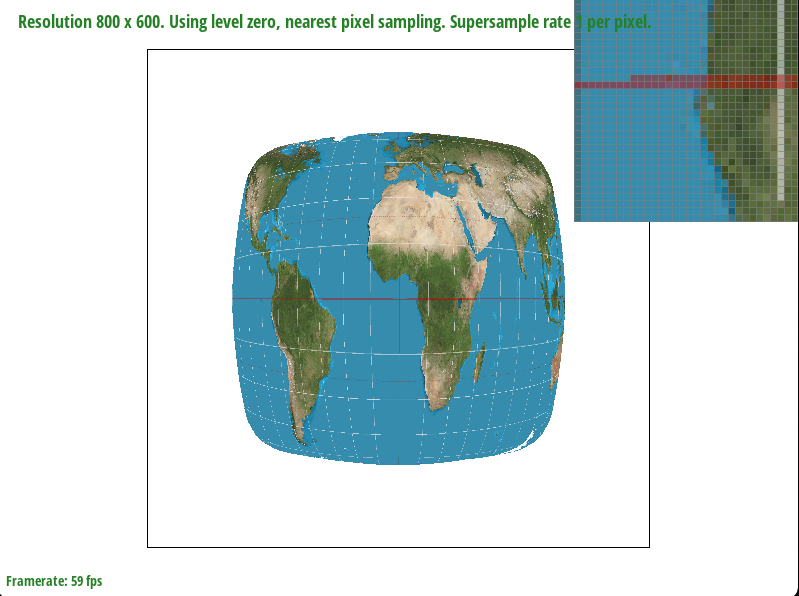
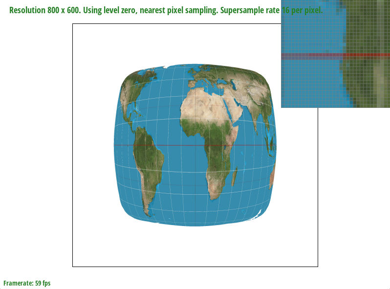
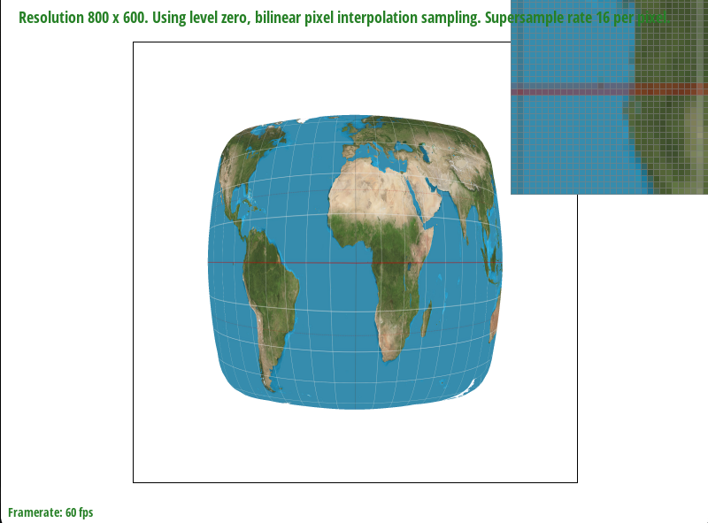
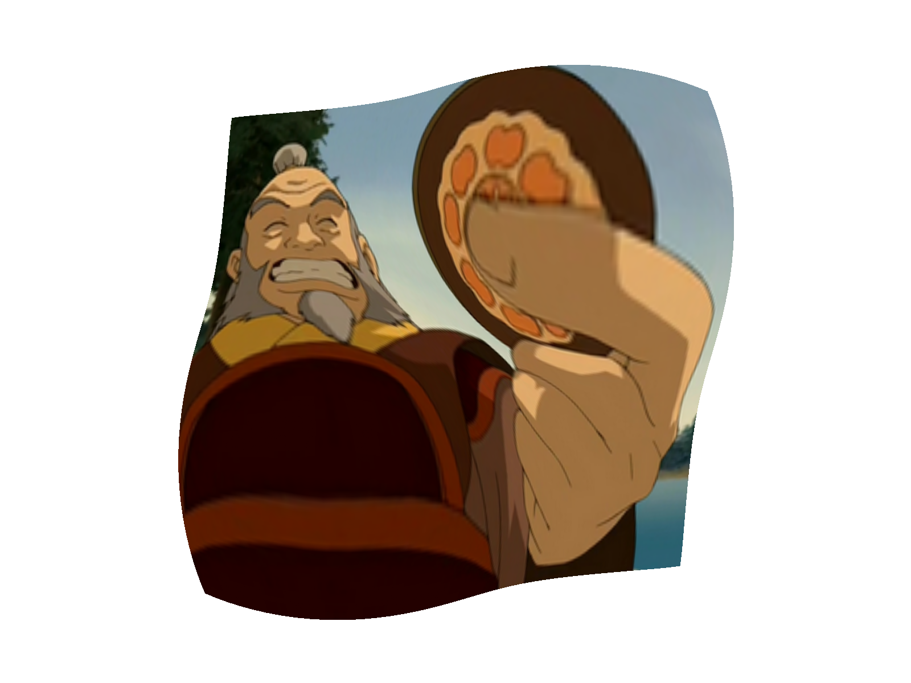

Overview
In this project, we implemented different rendering methods for images including transformations like scaling, translating, rotating. We also implemented methods to combat aliasing like pixel sampling and level sampling. We also used different coordinate spaces to add more complex colors and textures to shapes.
Section I: Rasterization
Part 1: Rasterizing single-color triangles
In order to rasterize a triangle, we first start by creating a "bounding box." We do this by finding the maximal and minimal x and y values of the triangle. We then iterate through each pixel within that bounding box, and perform a three-line triangle test to determine whether that pixel is inside or outside of the triangle. If it is inside, we color the triangle. We continue this for all points in the bounding box until the whole triangle is rasterized.
Our algorithm is no worse than one that checks each sample within the bounding box of the triangle, because our algorithm does exactly that.
Part 2: Antialiasing triangles
Our supersampling algorithm closely follows what we did for the default sample rate in task 1. What's different is that we essentially blow up the resolution to twice the size, sample it like before, and then downsample. We achieve this by changing the size of the sample buffer, as well as the triangle's coordinates by a factor of the square root of the sample rate. We then use our original algorithm to fill the blown out images sample buffer, and then downsample the values in the sample buffer onto the frame buffer, by averaging the pixel values in the supersample buffer that fit into a single pixel in the frame buffer.
Supersampling is useful because it allows us to reduce rough edges and jaggies.
In order to upsample and downsample, we had to scale how we map values to the sample buffer all throughout the rasterization pipeline. This scaling factor was simply the sampling rate.
Supersampling allowed us to anti-alias our triangles because it allowed us to capture some of the details lost to sampling at such a low sample rate.
|

|

|
Part 3: Transforms
I tried to make cubeman look like he was squating by applying rotation and translation transformations around his legs.
Section II: Sampling
Part 4: Barycentric coordinates
Barycentric coordinates are a way to calculate values in a triangle proportional to their distance from each vertex. For example, in the triangle above, each vertex of the triangle has a specific color value. Each point within the triangle has a value proportional to its distance from each vertex, which results in a gradient between each corner of the triangle.
Part 5: "Pixel sampling" for texture mapping
Pixel Sampling is a technique in which we sample based on relative coordinates. For the case of texture mapping, we sampled points on the texture relative to it's point in a triangle using barycentric coordinates. We used two sampling methods here, Nearest Neighbor Sampling and Bilinear Sampling. Nearest neighbor sampling simple takes a sample of the pixel in the texture located at the relative location of the triangle. Bilinear Sampling however takes into account the four nearest points to sample, and interpolates their values relative to their distances from the point on the texture.
As shown below, Bilinear Sampling Clearly defeats Nearest Neightbor sampling, especially at a sampling rate of 1. It looks much more smoother, than the other, but the difference is much more subtle as the sampling rate increases. It appears as though the major difference occurs at low sampling rates. This may be because at the low sampling rate, bilinear takes into account four pixels at a time, while Nearest Neighbor only takes into account a single pixel.
|

|

|
|
|

|
Part 6: "Level sampling" with mipmaps for texture mapping
Level sampling is a sampling method that samples objects that are further back in space at a lower resolution than objects that are in the foreground. Pixel sampling is the fastest and most memory efficient of the sampling methods. It requires exactly one sample per pixel; however, it is the most susceptible to aliasing. Multiple samples per pixel require upscaling and then downscaling which is both more memory and time intensive (both are linear with the sampling rate used per pixel). It is a good method for combating aliasing. Level sampling can be more memory intensive than both methods as it requires storing different downsampled copies of the image. It is also pretty time intensive because it requires calculating depth/level and then sampling from that mipmap accordingly. It is very effective against aliasing.

|
|
|

|
|